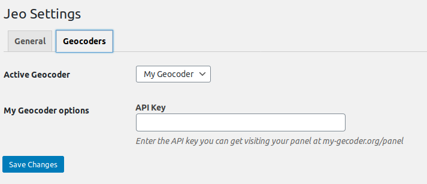

Writing a Geocoder
A Geocoder is a service that finds geographical coordinates from a search by address information. It's also able to get address details based on the geographical coordinates, which is called Reverse Geocoding.
JEO needs a geocoder service in a few situations, such as when users indicate to where on a map a story (posts) is related.
JEO comes with two native geocoder services users can choose from: Nominatim and Google. But new services can easily be added by plugins. This page documents how to do this.
Registering a Geocoder
Hook a function to the jeo_register_geocoders action and call the register with the following code:
add_action('jeo_register_geocoders', function($geocoders) {
$geocoders->register_geocoder([
'slug' => 'my-geocoder',
'name' => 'My Geocoder',
'description' => __('My Geocoder description', 'my-textdomain'),
'class_name' => 'MyGeocoderClass'
]);
});
This will tell JEO that there is a new Geocoder service available and give some information about it.
- Name and description will be used in the Administration panel so the admin can recognize and choose from the available Geocoders which one is to be used.
- slug needs to be a unique identifier for the geocoder
- class_name is the name of the Geocoder class
Creating the Geocoder class
Now we need to create the geocoder class. This will be a class that extends \Jeo\Geocoder and implement some methods that do the actual geocoding.
Inside the same hook, declare the class and two required methods:
geocode($search_string)The method that receives the search string, does the request to the geocoder servers and returns the coordinates and address details;reverse_geocode($lat, $lon)The method that receives latitude and longitude, requests the geocoder server, and returns the full location details in the same format as thegeocodemethod does.
While geocode() returns an array of search results, reverse_geocode() returns only one result.
Each result is an array that must have only the keys expected by the JEO plugin, so each Geocoder must find the best correspondence between each field and the fields expected by JEO.
Note: Only lat and lon are required.
Sample response with all accepted fields:
[
[
'lat' => '',
'lon' => '',
'full_address' => '',
'country' => '',
'country_code' => '',
'region_level_1' => '',
'region_level_2' => '', // State goes here
'region_level_3' => '',
'city' => '',
'city_level_1' => '',
]
]
Here is a simple example:
add_action('jeo_register_geocoders', function($geocoders) {
$geocoders->register_geocoder([
'slug' => 'my-geocoder',
'name' => 'My Geocoder',
'description' => __('My Geocoder description', 'my-textdomain'),
'class_name' => 'MyGeocoderClass'
]);
class MyGeocoderClass extends \Jeo\Geocoder {
public function geocode($search_string) {
$params = [
'q' => $search_string,
'format' => 'json',
'addressdetails' => 1
];
$r = wp_remote_get( add_query_arg($params, 'https://my-geocoder-server.org/search') );
$data = wp_remote_retrieve_body( $r );
$data = \json_decode($data);
$response = [];
if (\is_array($data)) {
foreach ($data as $match) {
$r = $this->format_response_item( (array) $match );
if ($r) $response[] = $r;
}
}
return $response;
}
public function reverse_geocode($lat, $lon) {
$params = [
'lat' => $lat,
'lon' => $lon,
'format' => 'json',
'addressdetails' => 1
];
$r = wp_remote_get( add_query_arg($params, 'https://my-geocoder-server.org/reverse') );
$data = wp_remote_retrieve_body( $r );
$data = \json_decode($data);
return $this->format_response_item( (array) $data );
}
private function format_response_item($match) {
$response = [
'lat' => $match['lat'],
'lon' => $match['lon'],
'full_address' => $match['display_name'],
'country' => $match['country'],
'country_code' => $match['country_code'],
'region_level_1' => $match['region_level_1'],
'region_level_2' => $match['region_level_2'], // State goes here
'region_level_3' => $match['region_level_3'],
'city' => $match['city'],
'city_level_1' => $match['city_level_1'],
];
return $response;
}
}
});
And that's it! Your new Geocoder is ready!
Adding additional Settings to the Geocoder
Some geocoder services might need or offer additional settings. Some might require the user to enter its API key, others might let the users restrict the search to a specific country to get better results when searching.
You can also easily add new settings to your Geocoder that will automatically be presented to the user on the Settings page.
Declare a method get_settings() in your class that will return an array of all the settings your Geocoder accepts.
Each setting is described by an array with the following keys:
slug: a slug for your option. You don't have to worry about naming conflicts, it will be stored inside your geocoders options;name: a human-readable name;description: an explanation to the user of what this setting is.
Let's see an example only with the relevant code:
add_action('jeo_register_geocoders', function($geocoders) {
// ...
class MyGeocoderClass extends \Jeo\Geocoder {
// ...
public function get_settings() {
// Note it is an array of arrays
return [
[
'slug' => 'api_key',
'name' => __('API Key', 'my-text-domain'),
'description' => __('Enter the API key you can get visiting your panel at my-gecoder.org/panel', 'my-text-domain')
]
];
}
}
});
And this is what you will see in the admin panel:

Accessing Settings values
Now that you have registered a setting and the user can change its value in the admin panel, you can use it in your geocoder.
To get its value, simply call $this->get_option($option_name).
Example:
// ...
// ...
public function geocode($search_string) {
$params = [
'q' => $search_string,
'format' => 'json',
'addressdetails' => 1,
'api_key' => $this->get_option('api_key')
];
// ...
return $response;
}
// ...
Declaring default values
You can also add the get_default_options() method to your class to set default values for each setting. This is optional and is done like this:
add_action('jeo_register_geocoders', function($geocoders) {
// ...
class MyGeocoderClass extends \Jeo\Geocoder {
// ...
public function get_default_options() {
return [
'api_key' => 'sand-box-api-key' // the key must match the slug of the setting registered in get_settings()
];
}
}
});
Advanced: Even further settings customization
If your geocoder needs some special settings that a simple text input won't handle, there is yet another method you can declare to add arbitrary HTML code to the Settings page.
settings_footer($settings) must echo HTML code that will be rendered at the end of your Geocoder settings page.
It received the $settings object, which is an instance of \Jeo\Settings and have some helpers you can use.
You only need to print form fields with the right names and JEO will take care of saving them for you.
To get the right field name use $settings->get_geocoder_option_field_name($name).
Example:
// ...
// ...
public function settings_footer($settings) {
?>
<p><strong>My Select option</strong></p>
<select name="<?php echo $settings->get_geocoder_option_field_name('new_option'); ?>">
<option value="yes" <?php selected( $this->get_option('new_option'), 'yes' ); ?> >
Yes
</select>
<option value="no" <?php selected( $this->get_option('new_option'), 'no' ); ?> >
No
</select>
</select>
<?php
}
// ...
Note: selected() is a native WordPress function. See the official documentation